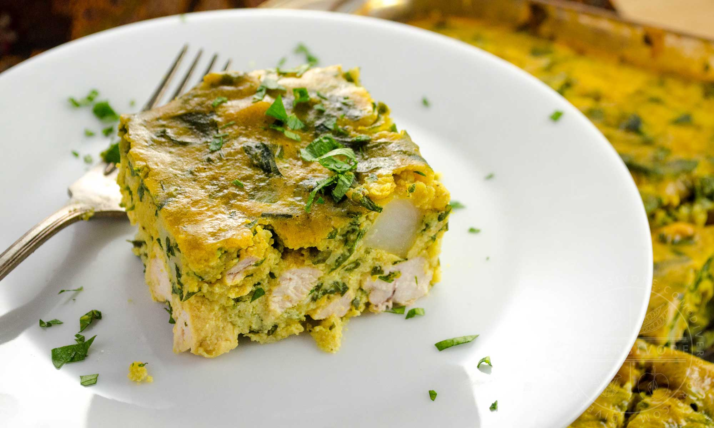
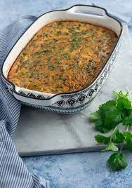

Tunisian Tajine

Description
Tunisian tajines are egg-based omelette-like dishes,
filled with a variety of meats, vegetables, and spices.
Tajine maadnous features chicken, flat-leaf parsley, potatoes,
cheese, and a homemade spice blend to deliver a delicious
and easy dish that makes a perfect appetizer or light meal.
Ingredients
- Parsley & Other Greens
- Cheese
- Hard boiled eggs
- Meats
- Harissa
- Black olives
- Spices

Steps
- Mix the spices together (grinding any whole spices if necessary) and set them aside.
- In a large frying pan or pot over medium heat, saute the onions in about 1 tbsp of olive oil until tender.
- Toss chicken with 1/2 of the spice mix. Add this to the pan and brown.
- Add the potatoes and the water to the pan. Bring to a gentle simmer, then cook uncovered until potatoes are tender and most of the liquid has evaporated.
- Stir chopped parsley into the cooked mixture and set aside to cool.
- Preheat oven to 350°F (180°C), and grease a medium (2 quart/liter) baking pan with the remaining olive oil.
- Thoroughly whisk the eggs in a large bowl, then mix in the cheese. Stir in the chicken, potato, and parsley mixture, along with the remaining spice mixture. Stir until well-combined, then pour into the oiled baking dish.
- Bake for 30-35 minutes, or until set in the center. Allow to cool, and serve warm or at room temperature. Serve with some harissa, if you like.